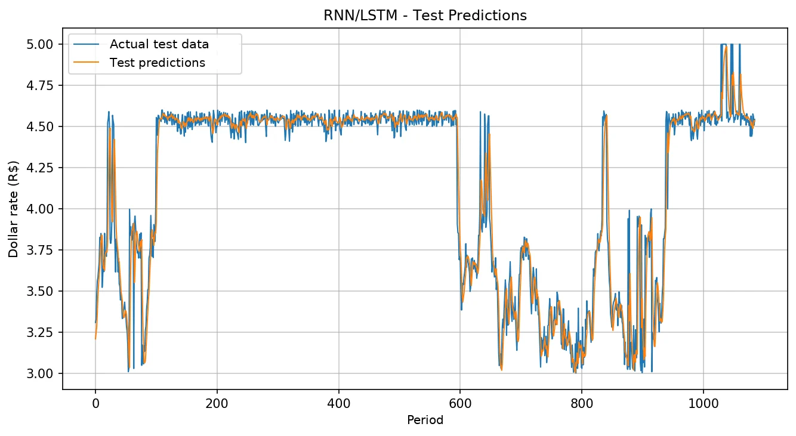
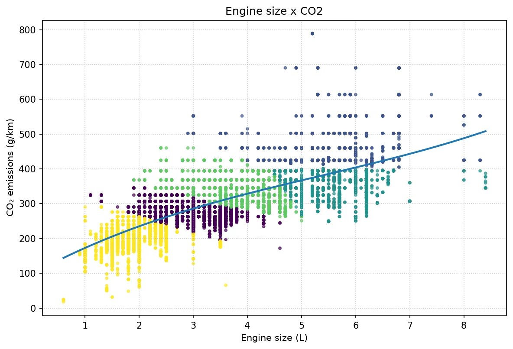

Data Science · Neural Networks · PUCPR · 2026
Neural networks to forecast the dollar and cluster cars
Two PyTorch networks for a Neural Networks assignment at PUCPR: an LSTM that forecasts the US dollar exchange rate and a competitive network that clusters vehicles by the relationship between engine size, efficiency and CO₂ emissions.

Forecasting the dollar
The LSTM closely followed the dollar's ups and downs on the test set.
It looks at the last 10 values in the series to predict the next one. I used an LSTM layer with 64 units and a dense layer with 16, and trained for 150 epochs with Adam. The normalization (MinMaxScaler) was fit only on the training data, so no information leaked from the test set.
LSTM R², from 0 to 1

Clustering cars
The competitive network split the cars into similar groups without anyone telling it what the groups were.
Each of the 5 neurons becomes the representative of a vehicle group. Then I fit a polynomial curve to each relationship to see the trend and make predictions, such as the estimated emissions of a car with an 8.2-liter engine (about 498 g/km).
Trend curve R², from 0 to 1

What the numbers show
Engine size alone explains only part of the variation (R² around 0.64), while efficiency and emissions move almost together (R² of 0.98). To improve it, I would add more variables, such as fuel type and vehicle weight. For the LSTM, R² dropped from 0.98 in training to 0.92 on test: it generalizes well but still misses the sharpest spikes.